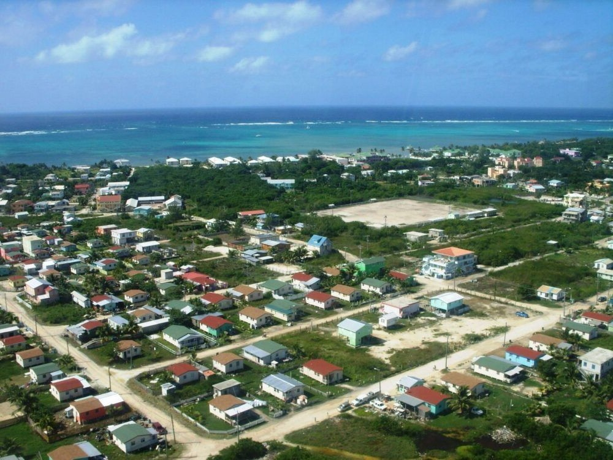
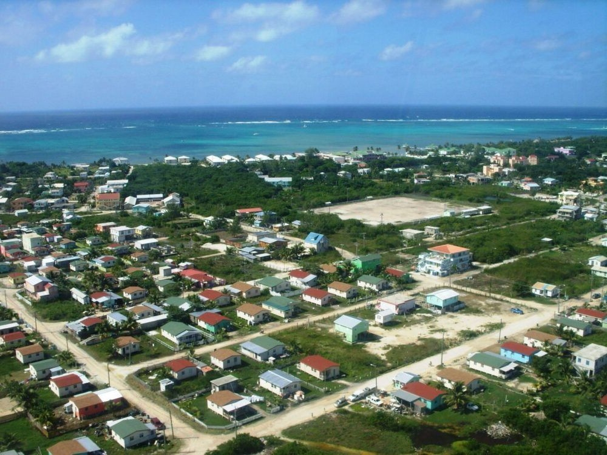

Belice7 (en inglés, Belize) es un país soberano de América ubicado en el extremo
noreste de Centroamérica. Es el único país de América Central cuya forma de gobierno
está organizada en una monarquía constitucional parlamentaria, donde la reina Isabel II
funge como jefa de Estado y es representada en el país por un gobernador general. La capital
es la ciudad de Belmopán y la ciudad más poblada es la Ciudad de Belice, que sirvió como capital
hasta el año 1970 cuando la destrucción causada por el huracán Hattie obligó al gobierno a transferir
la capital a la entonces comunidad planeada de Belmopán, fundada en 1960.8 Limita al norte con México,
al sur y oeste con Guatemala y el golfo de Honduras lo separa del país homónimo. La cultura
maya se extendió al territorio de Belice entre 1500 a. C. y 300 d. C. y floreció hasta
aproximadamente el siglo XIII.9 El contacto europeo comenzó en 1492 cuando Cristóbal
Colón navegó a lo largo del Golfo de Honduras.10 La exploración europea fue iniciada por
colonos ingleses en 1638. Este período también estuvo marcado por un conflicto entre España
y Gran Bretaña por el territorio hasta que Gran Bretaña derrotó a los españoles en la Batalla
de Cayo San Jorge en 1798.11 Se convirtió en colonia británica en 1840, conocida como Honduras
Británica. Obtuvo la independencia del Reino Unido el 21 de septiembre de 1981 y adquirió su actual
nombre, por la ciudad de Belice, a su vez nombrada por el río Belice.
Belice tiene un área de 22 800 km² y una población de 387 879 habitantes (2017). Tiene
la menor población y densidad de toda América Central.12 El crecimiento poblacional anual
era de 1.87 % en 2015, el segundo más alto de la región y de los más altos en todo el
hemisferio oeste.13
Aunque los idiomas predominantes son el español y el criollo beliceño, Belice es el único
país de América Central en donde el idioma oficial es el inglés, aunque solo el 62.9 % de la
población lo habla como idioma secundario (3 % como lengua madre) comparado con el 56.6 % de la
población que habla español, el 44.6 % que habla criollo beliceño y 10.5 % que habla maya.14 Belice
comparte un pasado común no solo con los países de América Central, sino también con el Caribe. Forma
parte de la Mancomunidad de Naciones, del Caricom y del Sistema de la Integración Centroamericana (SICA).
Volver al inicio